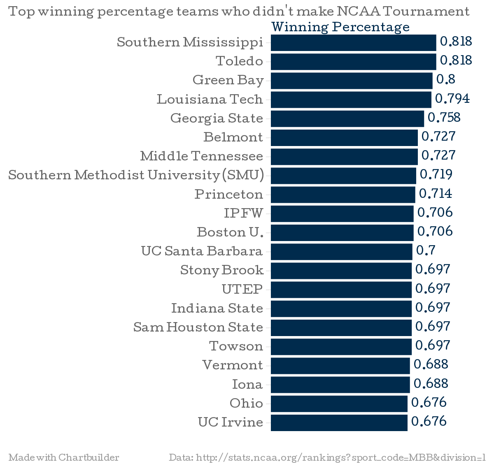
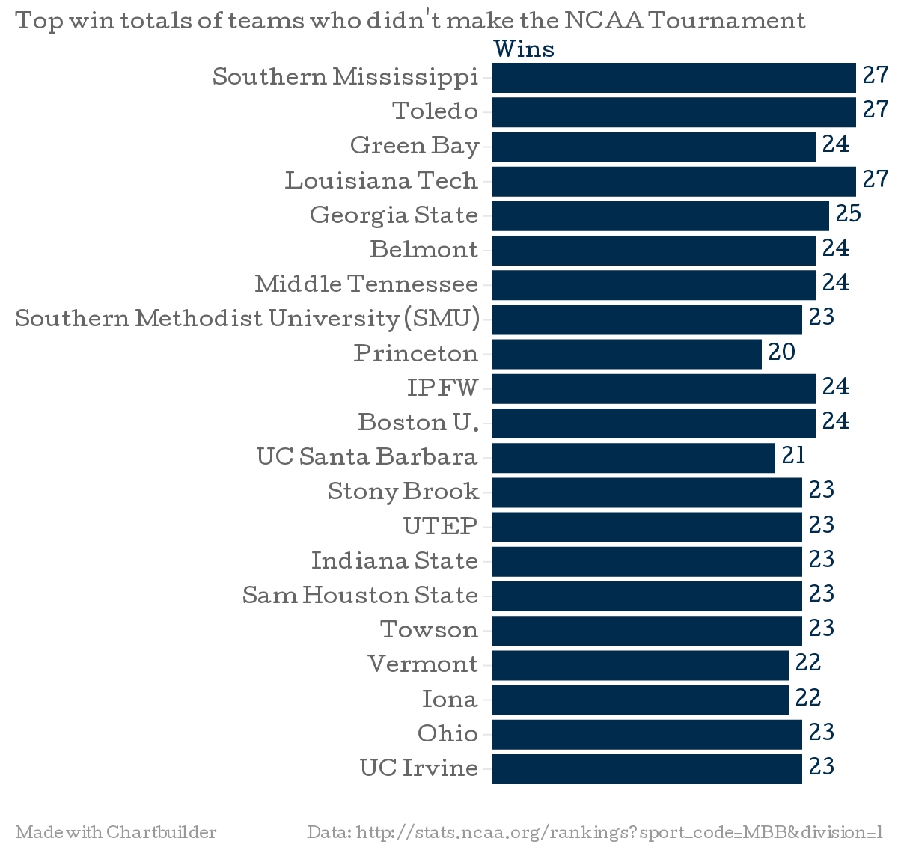

Analyzing the "Bubble Teams" of the NCAA Division 1 Men's Basketball Tournament (2013-2014 season).
Before you look farther at this webpage, I have an obsession with the NCAA Division 1 Men's Basketball Tournament every year. It's not just who plays who and who gets this or that ranking. It's basically everything! The NCAA Selection Committe puts Spokane, Washington as part of the East Region for a second and third round game! Spokane is west...or north! Spokane is definitely not in the east part of the United States!
Wichita State (34 Wins, 0 Losses) is the first team since UNLV in 1991 to go into the tournament undefeated. Tournament Champions North Carolina Central University (MEAC) and Cal Poly (Big West) are making their first NCAA Division 1 Tournament appearance. For the second time since 1973, no teams from the state of Indiana are in the tournament.
The winning percentages shown in the chart below are of teams who did not make it into the 2013-14 NCAA Division 1 Men's Basketball Tournament. If the 2013-14 NCAA Division 1 Men's Basketball Tournament was solely based on top 64 or top 68 teams winning percentages, some of these teams would have gotten into the 2013-14 NCAA Division 1 Men's Basketball Tournament.
Teams who would not have made the NCAA Tournament solely based on the Top 64 (or Top 68) winning percentages:
Shown in the chart below is the win totals of a handful of teams who did not make it into the 2013-13 NCAA Division 1 Men's Basketball Tournament.
Shown in the chart below is the win totals of a handful of teams who DID make it into the NCAA Tournament.

Why does overall record matter? Overall record matters because to a degree it does say a lot about how good or bad of a team you are. In some ways, overall record probably could be seen as an average record.
Why does conference record matter? Conference record matters because if your team is winning many games against a tough opponent, it means your team is at least a good team. Scoring lots on offense and not giving up a lot of points on defense is a sign of a good (maybe even a great team).
Conference Tournament Champions 2014:
Virginia is the 2014 ACC Conference Tournament Champions. They are making their 18th appearance in the NCAA Division 1 Men's Basketball Tournament. The last time they made the NCAA Division 1 Men's Basketball Tournament was in the year 2012.
Albany is the 2014 America East Conference Tournament Champions. They are making their 4th appearance in the NCAA Division 1 Men's Basketball Tournament. The last time they made the NCAA Division 1 Men's Basketball Tournament was in the year 2013. Louisville is the 2014 American Conference Tournament Champions. They are making their 40th appearance in the NCAA Division 1 Men's Basketball Tournament. The last time they made the NCAA Division 1 Men's Basketball Tournament was in the year 2013. St. Joseph's is the 2014 Atlantic 10 Conference Tournament Champions. They are making their 20th appearance in the NCAA Division 1 Men's Basketball Tournament. The last time they made the NCAA Division 1 Men's Basketball Tournament was in the year 2008. Mercer is the 2014 Atlantic Sun Conference Tournament Champions. They are making their 3rd appearance in the NCAA Division 1 Men's Basketball Tournament. The last time they made the NCAA Division 1 Men's Basketball Tournament was in the year 1985. Iowa State is the 2014 Big 12 Conference Tournament Champions. They are making their 16th appearance in the NCAA Division 1 Men's Basketball Tournament. The last time they made the NCAA Division 1 Men's Basketball Tournament was in the year 2013. Providence is the 2014 Big East Conference Tournament Champions. They are making their 16th appearance in the NCAA Division 1 Men's Basketball Tournament. The last time they made the NCAA Division 1 Men's Basketball Tournament was in the year 2004. Weber State is the 2014 Big Sky Conference Tournament Champions. They are making their 15th appearance in the NCAA Division 1 Men's Basketball Tournament. The last time they made the NCAA Division 1 Men's Basketball Tournament was in the year 2007. Coastal Carolina is the 2014 Big South Conference Tournament Champions. They are making their 3rd appearance in the NCAA Division 1 Men's Basketball Tournament. The last time they made the NCAA Division 1 Men's Basketball Tournament was in the year 1993. Michigan State is the 2014 Big Ten Conference Tournament Champions. They are making their 27th appearance in the NCAA Division 1 Men's Basketball Tournament. The last time they made the NCAA Division 1 Men's Basketball Tournament was in the year 2013. Cal Poly is the 2014 Big West Conference Tournament Champions. They are making their 1st appearance in the NCAA Division 1 Men's Basketball Tournament. The last time they made the NCAA Division 1 Men's Basketball Tournament was in the year 0. Delaware is the 2014 Colonial Conference Tournament Champions. They are making their 5th appearance in the NCAA Division 1 Men's Basketball Tournament. The last time they made the NCAA Division 1 Men's Basketball Tournament was in the year 1999. Tulsa is the 2014 C-USA Conference Tournament Champions. They are making their 15th appearance in the NCAA Division 1 Men's Basketball Tournament. The last time they made the NCAA Division 1 Men's Basketball Tournament was in the year 2003. Milwaukee is the 2014 Horizon Conference Tournament Champions. They are making their 4th appearance in the NCAA Division 1 Men's Basketball Tournament. The last time they made the NCAA Division 1 Men's Basketball Tournament was in the year 2006. Harvard is the 2014 Ivy League Conference Tournament Champions. They are making their 4th appearance in the NCAA Division 1 Men's Basketball Tournament. The last time they made the NCAA Division 1 Men's Basketball Tournament was in the year 2013. Manhattan is the 2014 MAAC Conference Tournament Champions. They are making their 7th appearance in the NCAA Division 1 Men's Basketball Tournament. The last time they made the NCAA Division 1 Men's Basketball Tournament was in the year 2004. Western Michigan is the 2014 MAC Conference Tournament Champions. They are making their 4th appearance in the NCAA Division 1 Men's Basketball Tournament. The last time they made the NCAA Division 1 Men's Basketball Tournament was in the year 2004. North Carolina Central is the 2014 MEAC Conference Tournament Champions. They are making their 1st appearance in the NCAA Division 1 Men's Basketball Tournament. The last time they made the NCAA Division 1 Men's Basketball Tournament was in the year 0. Wichita State is the 2014 Missouri Valley Conference Tournament Champions. They are making their 11th appearance in the NCAA Division 1 Men's Basketball Tournament. The last time they made the NCAA Division 1 Men's Basketball Tournament was in the year 2013. New Mexico is the 2014 Mountain West Conference Tournament Champions. They are making their 15th appearance in the NCAA Division 1 Men's Basketball Tournament. The last time they made the NCAA Division 1 Men's Basketball Tournament was in the year 2013. Mount St. Mary's is the 2014 Northeast Conference Tournament Champions. They are making their 4th appearance in the NCAA Division 1 Men's Basketball Tournament. The last time they made the NCAA Division 1 Men's Basketball Tournament was in the year 2008. Eastern Kentucky is the 2014 Ohio Valley Conference Tournament Champions. They are making their 8th appearance in the NCAA Division 1 Men's Basketball Tournament. The last time they made the NCAA Division 1 Men's Basketball Tournament was in the year 2007. UCLA is the 2014 Pac-12 Conference Tournament Champions. They are making their 43rd appearance in the NCAA Division 1 Men's Basketball Tournament. The last time they made the NCAA Division 1 Men's Basketball Tournament was in the year 2013. American is the 2014 Patriot Conference Tournament Champions. They are making their 3rd appearance in the NCAA Division 1 Men's Basketball Tournament. The last time they made the NCAA Division 1 Men's Basketball Tournament was in the year 2009. Florida is the 2014 SEC Conference Tournament Champions. They are making their 19th appearance in the NCAA Division 1 Men's Basketball Tournament. The last time they made the NCAA Division 1 Men's Basketball Tournament was in the year 2013. Wofford is the 2014 Southern Conference Tournament Champions. They are making their 3rd appearance in the NCAA Division 1 Men's Basketball Tournament. The last time they made the NCAA Division 1 Men's Basketball Tournament was in the year 2011. Stephen F. Austin is the 2014 Southland Conference Tournament Champions. They are making their 2nd appearance in the NCAA Division 1 Men's Basketball Tournament. The last time they made the NCAA Division 1 Men's Basketball Tournament was in the year 2009. Texas Southern is the 2014 SWAC Conference Tournament Champions. They are making their 5th appearance in the NCAA Division 1 Men's Basketball Tournament. The last time they made the NCAA Division 1 Men's Basketball Tournament was in the year 2003. North Dakota State is the 2014 Summit Conference Tournament Champions. They are making their 2nd appearance in the NCAA Division 1 Men's Basketball Tournament. The last time they made the NCAA Division 1 Men's Basketball Tournament was in the year 2009. Louisiana–Lafayette is the 2014 Sun Belt Conference Tournament Champions. They are making their 6th appearance in the NCAA Division 1 Men's Basketball Tournament. The last time they made the NCAA Division 1 Men's Basketball Tournament was in the year 2000. Gonzaga is the 2014 West Coast Conference Tournament Champions. They are making their 17th appearance in the NCAA Division 1 Men's Basketball Tournament. The last time they made the NCAA Division 1 Men's Basketball Tournament was in the year 2013. New Mexico State is the 2014 WAC Conference Tournament Champions. They are making their 21st appearance in the NCAA Division 1 Men's Basketball Tournament. The last time they made the NCAA Division 1 Men's Basketball Tournament was in the year 2013.Overall win-loss records of teams who didn't make the NCAA Tournament:
Southern Mississippi had an overall record of 27 wins and 6 losses.
Toledo had an overall record of 27 wins and 6 losses.
Green Bay had an overall record of 24 wins and 6 losses.
Louisiana Tech had an overall record of 27 wins and 7 losses.
Georgia State had an overall record of 25 wins and 8 losses.
Belmont had an overall record of 24 wins and 9 losses.
Middle Tennessee had an overall record of 24 wins and 9 losses.
Southern Methodist University (SMU) had an overall record of 23 wins and 9 losses.
Princeton had an overall record of 20 wins and 8 losses.
IPFW had an overall record of 24 wins and 10 losses.
Boston University had an overall record of 24 wins and 10 losses.
UC Santa Barbara had an overall record of 21 wins and 9 losses.
Stony Brook had an overall record of 23 wins and 10 losses.
UTEP had an overall record of 23 wins and 10 losses.
Indiana State had an overall record of 23 wins and 10 losses.
Sam Houston State had an overall record of 23 wins and 10 losses.
Towson had an overall record of 23 wins and 10 losses.
Vermont had an overall record of 22 wins and 10 losses.
Iona had an overall record of 22 wins and 10 losses.
Ohio had an overall record of 23 wins and 11 losses.
UC Irvine had an overall record of 23 wins and 11 losses.
Teams who got into the NCAA Tournament who deserve to be in the Tournament (top winning percentages solely based on overall record):
Wichita State has 34 Wins and 0 Losses.
Florida has 32 Wins and 2 Losses. Stephen F. Austin has 31 Wins and 2 Losses. Arizona has 30 Wins and 4 Losses. San Diego State has 29 Wins and 4 Losses. Villanova has 28 Wins and 4 Losses. Harvard has 26 Wins and 4 Losses. Louisville has 29 Wins and 5 Losses. N.C. Central has 28 Wins and 5 Losses. Syracuse has 27 Wins and 5 Losses. Gonzaga has 28 Wins and 6 Losses. Virginia has 28 Wins and 6 Losses. Cincinnati has 27 Wins and 6 Losses. New Mexico has 27 Wins and 6 Losses. Saint Louis has 26 Wins and 6 Losses. North Dakota St. has 25 Wins and 6 Losses. Wisconsin has 26 Wins and 7 Losses. Iowa State has 26 Wins and 7 Losses. Creighton has 26 Wins and 7 Losses. Manhattan has 25 Wins and 7 Losses. VCU has 26 Wins and 8 Losses. Mercer has 26 Wins and 8 Losses. Duke has 26 Wins and 8 Losses. UCLA has 26 Wins and 8 Losses. UConn has 26 Wins and 8 Losses. Michigan State has 26 Wins and 8 Losses. Michigan has 25 Wins and 8 Losses. George Washington has 24 Wins and 8 Losses. Massachusetts (UMass) has 24 Wins and 8 Losses. New Mexico State has 26 Wins and 9 Losses. Ohio State has 25 Wins and 9 Losses. Delaware has 25 Wins and 9 Losses. Pittsburgh has 25 Wins and 9 Losses. Kansas has 24 Wins and 9 Losses. Eastern Kentucky has 24 Wins and 9 Losses. Saint Joseph's has 24 Wins and 9 Losses. Western Michigan has 23 Wins and 9 Losses. Memphis has 23 Wins and 9 Losses. North Carolina has 23 Wins and 9 Losses. Oregon has 23 Wins and 9 Losses. Oklahoma has 23 Wins and 9 Losses. Kentucky has 24 Wins and 10 Losses. Texas has 23 Wins and 10 Losses. *Dayton has 23 Wins and 10 Losses. *Baylor has 24 Wins and 11 Losses. *Louisiana-Lafayette has 23 Wins and 11 Losses. *Colorado has 23 Wins and 11 Losses. *BYU has 23 Wins and 11 Losses. *Providence has 23 Wins and 11 Losses.So what teams SHOULD have got into the NCAA Tournament? And what teams SHOULD NOT HAVE made it to the NCAA Tournament?
SHOULD: Why? Good enough overall winning percentage.
Southern Mississippi
Case: Before NCAA Tournament play started: This team had a perfect record at home of 12-0. Won ten games on the road, and is 3-1 at a neutral site. Conference (C-USA) record is 13-3. RPI is 33. Finished season: By defeating Toledo and Missouri before falling to Minnesota in NIT Tournament. 13-0 at home by defeating Toledo 66-59 in NIT Tournament, 11-6 on the road (defeated Missouri 71-63 before falling to Minnesota 81-73 in NIT Tournament) and 29-7 overall.
ToledoCase: Before NCAA Tournament play started: This team has a home record of 14-0. This team is 9-5 on the road, and is 3-1 at a neutral site. Conference (MAC) Record is 14-4. RPI is 38. Finished season: 14-0 at home, 9-6 on the road (loss at Southern Mississippi 81-73 in NIT Tournament), and 27-7 overall.
Green BayCase: Before NCAA Tournament play started: This team was 10-3 at home, 9-2 on the road, and 2-1 at a neutral site. Conference (Horizon) record is 14-2. RPI is 58. Finished season: 10-4 at home (loss to Belmont 80-65 in NIT Tournament), 9-2 on the road, and 24-7 overall.
Louisiana TechCase: Before NCAA Tournament play started: This team was 12-1 at home, 9-4 on the road, and 5-2 at a neutral site. Conference (C-USA) record is 13-3. RPI is 62. Finished season by defeating Iona and Georgia before falling to Florida State in NIT Tournament. 13-1 at home (defeated Iona 89-88), 10-5 on road (defeated Georgia 79-71 and fell to Florida State 78-75), and 29-8 overall.
Georgia StateCase: Before NCAA Tournament play started: This team was 11-0 at home, 10-6 on the road, and 2-2 at a neutral site. Conference (Sun Belt) Record 17-1. RPI is 76. Finished season by losing at Clemson 78-66 in NIT Tournament. 11-0 at home, 10-7 on road (Clemson in NIT Tournament), and 25-9 overall.
BelmontCase: Before NCAA Tournament play started: This team was 11-1 at home, 9-7 on the road, and 3-1 at a neutral site. Conference (OVC) record 14-2. RPI is 57. Finished season by defeating Green Bay 80-65 and Robert Morris 82-71 before falling to Clemson 73-68 in NIT Tournament. 12-1 at home (Robert Morris-NIT Tournament, 10-8 on road (Green Bay & Clemson-NIT Tournament), 26-10 overall.
Middle TennesseeCase: Before NCAA Tournament play started: This team was 12-2 at home, 8-5 on the road, and 2-2 at a neutral site. Conference (C-USA) record is 13-3. RPI is 64. Finished season not making NCAA or NIT Tournaments. Overall record 24-9.
Southern Methodist University (SMU)Case: Before NCAA Tournament play started: This team was 15-1 at home, 6-6 on the road, and 2-2 at a neutral site. Conference (AAC) record: 12-6. RPI is 53. Have won three straight home games in NIT Tournament over UC Irvine 68-54, LSU 80-67, and California 67-65. Face Clemson on April 1st.
PrincetonCase: Before NCAA Tournament play started: This team was 10-2 at home, 8-5, on the road, and 1-1 at a neutral site. Conference (Ivy) record: 8-6. RPI is 122. Finished season by defeating Tulane 56-55 and then falling to Fresno State 72-56. 10-2 at home, 9-6 (Tulane and Fresno State-CBI Tournament) on the road, and 21-9 overall.
IPFWCase: Before NCAA Tournament play started: This team was 9-2 at home, 8-7 on the road, and 4-1 at a neutral site. Conference (Summit) record: 10-4. RPI is 115. Finished season by defeating Akron 97-91 in CIT before falling to Virginia Military 106-95. 10-2 at home (Akron-CIT), 8-8 on the road (Virginia Military-CIT), and 25-11 overall.
Boston UniversityCase: Before NCAA Tournament play started: This team was 11-5 at home, 11-4 on the road, and 2-1 at a neutral site. Conference (Patriot) record: 15-3. RPI is 84. Finished season by losing to Illinois 66-62 in NIT Tournament. 11-6 at home (Illinois-NIT Tournament), 11-4 on the road, and 24-11 overall.
UC Santa BarbaraCase: Before NCAA Tournament play started: This team was 8-3 at home, 9-5 on the road, and 2-1 at a neutral site. Conference (Big West) record: 12-4. RPI is 107. Finished season by not making it into the NCAA or NIT Tournaments. Overall record 21-9.
Stony BrookCase: Before NCAA Tournament play started: This team was 11-3 at home, 8-5 on the road, and 3-2 at a neutral site. Conference (America East) record: 13-3. RPI is 165. Finished season by falling to Siena 65-55 in CBI Tournament. 11-3 at home, 8-6 on the road (Siena-CBI Tournament), and 23-11 overall.
SHOULD NOT HAVE: Why? Not good enough overall winning percentage.
Arizona State
Stanford Tennessee Tulsa Xavier Coastal Carolina Oklahoma State Kansas State American Iowa North Carolina State Milwaukee Nebraska Texas SouthernTo be objective, this is every team who I think should be in this year's NCAA Tournament. The teams listed below are teams who got an automatic bid into the NCAA Tournament by winning their conference tournament championship (32 teams) or they got in because of their winning percentage was among the Top 36 remaining teams eligible to get into the Tournament who didn't already qualify for the Tournament.
Wichita State has 34 wins and 0 losses.
Florida has 32 wins and 2 losses. Stephen F. Austin has 31 wins and 2 losses. Harvard has 26 wins and 4 losses. Louisville has 29 wins and 5 losses. North Carolina Central has 28 wins and 5 losses. Gonzaga has 28 wins and 6 losses. Virginia has 28 wins and 6 losses. New Mexico has 27 wins and 6 losses. North Dakota State has 25 wins and 6 losses. Iowa State has 26 wins and 7 losses. Manhattan has 25 wins and 7 losses. Mercer has 26 wins and 8 losses. UCLA has 26 wins and 8 losses. Michigan State has 26 wins and 8 losses. New Mexico State has 26 wins and 9 losses. Delaware has 25 wins and 9 losses. Eastern Kentucky has 24 wins and 9 losses. Saint Joseph's has 24 wins and 9 losses. Western Michigan has 23 wins and 9 losses. Louisiana-Lafayette has 23 wins and 11 losses. Providence has 23 wins and 11 losses. Tulsa has 21 wins and 12 losses. Coastal Carolina has 21 wins and 12 losses. Weber State has 19 wins and 11 losses. Wofford has 20 wins and 12 losses. American has 20 wins and 12 losses. Milwaukee has 21 wins and 13 losses. Texas Southern has 19 wins and 14 losses. Albany has 18 wins and 14 losses. Mount St. Mary's has 16 wins and 16 losses. Cal Poly has 13 wins and 19 losses. Arizona has 30 wins and 4 losses. San Diego State has 29 wins and 4 losses. Villanova has 28 wins and 4 losses. Syracuse has 27 wins and 5 losses. Southern Mississippi has 27 wins and 6 losses. Toledo has 27 wins and 6 losses. Cincinnati has 27 wins and 6 losses. Saint Louis has 26 wins and 6 losses. Green Bay has 24 wins and 6 losses. Louisiana Tech has 27 wins and 7 losses. Wisconsin has 26 wins and 7 losses. Creighton has 26 wins and 7 losses. VCU has 26 wins and 8 losses. Duke has 26 wins and 8 losses. UConn has 26 wins and 8 losses. Michigan has 25 wins and 8 losses. Georgia State has 25 wins and 8 losses. George Washington has 24 wins and 8 losses. Massachusetts (UMass) has 24 wins and 8 losses. Ohio State has 25 wins and 9 losses. Pittsburgh has 25 wins and 9 losses. Belmont has 24 wins and 9 losses. Middle Tennessee has 24 wins and 9 losses. Kansas has 24 wins and 9 losses. Memphis has 23 wins and 9 losses. North Carolina has 23 wins and 9 losses. Southern Methodist University (SMU) has 23 wins and 9 losses. Oregon has 23 wins and 9 losses. Oklahoma has 23 wins and 9 losses. Princeton has 20 wins and 8 losses. Kentucky has 24 wins and 10 losses. IPFW has 24 wins and 10 losses. Boston U. has 24 wins and 10 losses. UC Santa Barbara has 21 wins and 9 losses. Stony Brook has 23 wins and 10 losses. Texas has 23 wins and 10 losses. *UTEP has 23 wins and 10 losses. *Indiana State has 23 wins and 10 losses. *Sam Houston State has 23 wins and 10 losses. *Dayton has 23 wins and 10 losses. *Towson has 23 wins and 10 losses.*UTEP, Indiana State, Sam Houston State, Dayton, and Towson had the same winning percentage as Stony Brook and Texas, but Stony Brook and Texas were ranked higher so they get into the Tournament and UTEP, Indiana State, Sam Houston State, Dayton, and Towson are the first five who don't get into the Tournament.
Why should I even bother to watch the NCAA Tournament? The NCAA Tournament is exciting and there are upsets every year. However, the selection committee sometimes ranks the team with the worse winning percentage higher than the team with a better overall winning percentage.
Teams who should not be in the NCAA Tournament.